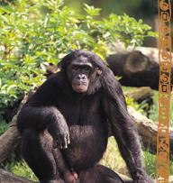

Chimpansees

Chimpansees leven in de tropische bossen van Afrika. Zij zijn kleiner, luidruchtiger, beweeglijker en sneller opgewonden dan gorilla’s. Ze leven gewoonlijk in gemengde groepen van niet meer dan twintig. Chimpansees hebben evenals de andere mensapen geen staart. Gewoonlijk lopen ze op handen en voeten, maar ze kunnen net als de andere apen rechtop lopen. De chimpansees zijn erg goed in klimmen en snel in lopen. Van alle apen zijn de chimpansees het intelligentst. Als ze volwassen zijn worden ze vaak woest en vernielzuchtig. Zoals alle apen zijn ze niet geschikt als huisdier. Chimpansees eten hoofdzakelijk vruchten, bessen en termieten (insecten). Soms doden ze andere dieren, ook wel apen en eten ze op. Elke nacht opnieuw maken ze binnen vijf minuten een nest om in te slapen.